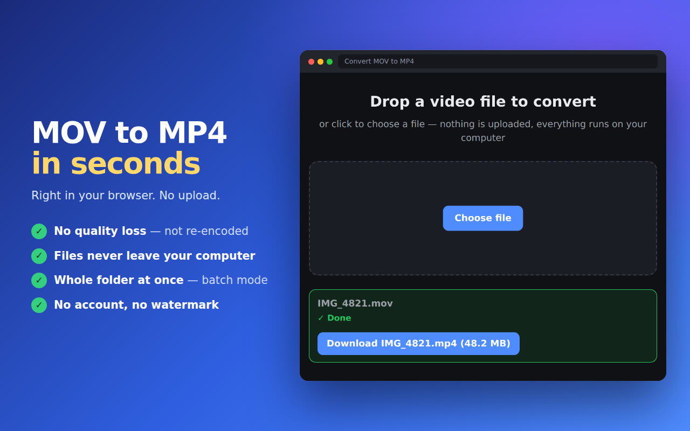

Convert MOV to MP4right in your browser
iPhone clips that won't open on Windows, videos an upload form rejects, files a client can't play. Drop them in and get an MP4 back in seconds. The video never leaves your computer. No sign-up, no watermark.
No upload · works both ways, MOV to MP4 and MP4 to MOV · no account

The phone saved a .MOV and nothing wants to open it
An iPhone records video as .MOV, often in HEVC. On Windows that file needs a paid codec to play, Chrome only plays HEVC when the computer has a hardware decoder, and plenty of upload forms and editors simply ask for MP4. The usual fix is a converter website: upload a big file, wait in a queue, download it again. This one does the job on your own computer, in a browser tab.
How it works
Three steps. Nothing to upload, no account to make.
Drop in the video
Click the extension icon and choose a file, or several. MOV from an iPhone, a camera export, a screen recording.
See how long it will take
The file is checked first and you get an honest estimate before anything starts: seconds for a plain MOV, a few minutes for a heavy HEVC clip.
Save the MP4
Download the finished file. Your original stays untouched, the MP4 is always a new file.
Why people use it
Built to do one job well: turn a video nobody can open into one everybody can.
No quality loss when it can
MOV and MP4 are the same container family. When the video inside is H.264, the file is rewrapped, not re-encoded, so the picture stays exactly as it was.
Fixes iPhone HEVC too
An HEVC clip is converted to H.264, the format that plays on any Windows PC, phone or TV, using your computer's own video hardware.
Works both ways
Need the opposite? The same engine converts MP4 to MOV, with the same speed and the same privacy.
Batch mode
Select a batch of clips and pick one folder to save them to. Each one is queued and converted while you keep working.
No upload, no queue
Your video is read from disk and converted in the tab. There is no server waiting on the other end, so a big file doesn't mean a long upload.
Free, no sign-up
Install it and convert. No account, no email, no watermark.
What happens to your videos
Short version: they stay with you.
- Conversion runs in your browser, on your computer. Your video files are never uploaded, not to us and not to anyone else.
- The only thing sent is anonymous usage stats: a random install ID, the app version, the browser language and events like "conversion finished". Never file names, never file contents.
- Your IP address is used only to work out the country and is then discarded. Your data is never sold or shared.
Questions
How do I convert a MOV file to MP4?
Open the extension, drop in the file and save the MP4 when it's done. There are no settings to pick. The conversion runs in your browser, so the video is never uploaded.
Can I convert MOV to MP4 without losing quality?
Yes, when the video inside the MOV is H.264. MOV and MP4 share the same container family, so the file is rewrapped, not re-encoded, and the picture stays exactly the same. HEVC clips have to be re-encoded to H.264 to play everywhere, and that step also runs on your own computer.
Why won't my iPhone video play on Windows?
iPhones record in HEVC by default. Windows needs Microsoft's paid HEVC Video Extensions to play it, and Chrome only plays HEVC when the computer has a hardware decoder. Converting the clip to MP4 with H.264 video makes it play everywhere.
How long does it take?
A MOV with H.264 inside is done in seconds. An HEVC clip takes longer because it is re-encoded, and on a computer without a hardware HEVC decoder the slowest path can take a few minutes per minute of 4K video. You see the estimate for your file before it starts.
Can it convert MP4 to MOV?
Yes. The same engine works in both directions, MOV to MP4 and MP4 to MOV.
Are my videos uploaded anywhere?
No. The file is read from your disk and converted inside your browser. It never leaves your computer.
Is it free?
Yes. It's free to use, with no sign-up and no watermark.